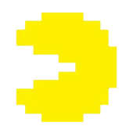

METROID LAND
El lugar con la mejor información sobre Samus Aran y Metroid y a veces de otros videojuegos XD
Metroid
Es una serie de videojuegos de acción-aventura, cuya idea fue concebida por Makoto Kano y el artista Hiroji Kiyotake a principios de la década de 1980
La serie de juegos de Metroid, narra las aventuras de la cazarrecompensas Samus Aran, quién trata de proteger la galaxia de los piratas espaciales y el tráfico de de las critauras llamadas Metroid.
Dichos Metroids son una raza de organismos depredadores que tienen la capacidad de obtener energía de diversos seres vivos.
Los piratas espaciales son una raza interestelar malvada originaría del Planeta Pirata. Han ido conquistando planetas, atacando y asesinando a quienes los combatieran.
Al descubrir el planeta SR388 y la especie de los Metroids, depredadores similares a medusas capaces de absorber la energía de otros seres vivos hasta causarles la muerte, su éxito fue enorme a la hora de conquistar más planetas.
Los piratas se apoderaron de los Metroids y los han usado como soldados y han usado su energía para lograr sus propósitos. La Federación Galáctica decidió un cuerpo de policia para combatir a los Piratas Espaciales.
Samus Aran es una mujer de la raza humana que quedó huérfana a temprana edad, al crecer se una a la Policia de la Federación Galáctica, para combatir a los Piratas Espaciales.

Samus Aran
La mejor cazarrecompensas de la Federación Galáctica
Samus Aran La cazarrecompensas humana adoptada por la raza Chozo
Samus Aran es una niña humana, su infancia se desarrllo en el planeta K-2L. Los piratas espaciales lo invadieron y mataron a muchas personas.
El lider delos Piratas Ridley, asesinó a la mayor parte de los habitantes, incluyendo a los padres de Samus, luego destruyeron el planeta.
La raza alienígena con apariencia de pájaro, Chozo encontró a Samus. Se la llevaron a su planeta natal: Zebes.
Los Chozo dotaron a Samus con parte de su ADN y le dieron un traje especial, un exoesqueleto mecánico, que además se conecta con su cuerpo y su mente: el Power Suit.
Ella crece y se una a la policia de la Federación Galáctica, para mantener la paz en la Federación y proteger la galaxia.
Luego de un tiempo abandona la policia pero sigue enfrentando a los Piratas por su propia cuenta.
Metroids
Una especie con sorprendentes habilidades

Los Metroids son organismos nativos del planeta SR388. Son capaces de alimentarse de la energía vital de otros seres vivos.
El Metroide típico es un organismo con forma de una gran bolsa ventral transparente, similar a una medusa. Tiene varios órganos en su interior y cuatro colmillos en la parte inferior de su cuerpo.
Fueron diseñados por un grupo de seres Chozo para combatir un parásito, pero el experimento se salió de control y los dejaron en SR388.
Los Piratas Espaciales los descubren y los usan como arma biológica, clonándolos y modificándolos a su antojo con fines bélicos.
Son débiles a las bajas temperaturas, puesto que se congela su cuerpo, por eso son vulnerables a algunas armas de Samus Aran como el Ice Beam.
Ridley
El líder de los piratas espaciales y Archienemigo de Samus

El alienígena conocido como Ridley es el líder de los piratas espaciales, y es el asesino de los padres de Samus.
También es conocido como "El astuto dios de la muerte", es originario del planeta Zebes, tiene forma de Dragón espacial y es el único individuo de su especie.
A pesar de ser derrotado varias veces por Samus, siempre regresa, puesto que los piratas han utilizado su tecnología, para revivirlo o clonarlo.
Es el enemigo más fuerte que enfrenta Samus durante sus viajes a través de la galaxia protegiendo a los Metrodis y combatiendo a los piratas.
Larva Metroide
Soy una hermosa larva Metroid
Post más relevantes
-
 Kirby
Kirby
El guerrero más fuerte del universo soy yo -
Mario
Tips para domar a su caballo Yoshi -

Pac Man
Come sobrevivir durante todo un juego con solo 3 vidas
Tags
Metroid Samus Tokio Videojuego Ridley Piratas Espaciales Yoshi Chozo Zebes caballo Policia nintendo Mario Pac Man
Galeria
Sígueme
SUSCRÍBETE
Ingresa tu correo, para enterarte de las últimas notificaciones y noticias del blog